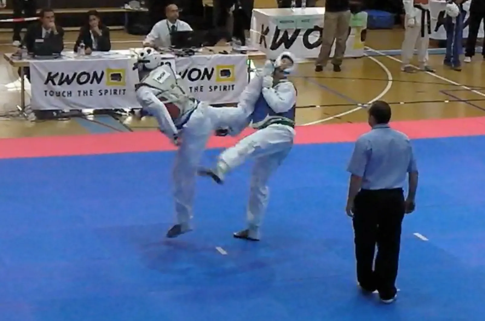

Champion, Open Swiss Academic Championships: Kickboxing (Heavy weight)
Honors & Awards

Martial Arts
Champion, Open Swiss Academic Championships: Mixed Martial Arts (Heavy weight)
Champion, International Black Forest Cup (GER)
3rd, International Reutlinger/Tübinger Cup (GER)
2nd, International Reutlinger/Tübinger Cup (GER)
Herausragende Leistungen im Sport
3rd, International Peniche Open (POR)
3rd, International Lorraine Open (FR)
Swiss National Champion
Swimming
Basel Champion 100m Crawl
3rd, Regionalmeisterschaft Zentralschweiz 100m Crawl
Basel Champion 100m Crawl